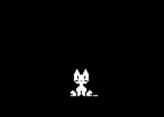
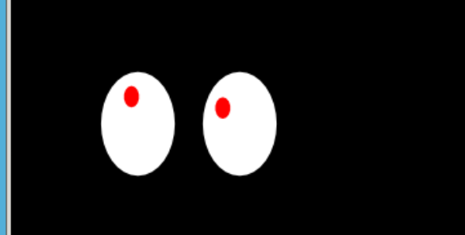

本章回顾
我们来回顾一下 😌
- 我们这次使用了tmux
- tmux连接不同服务器可以有不同的session
- 同一个session里面可以有多个窗口window
- 同一个window里面可以有多个窗格pane
- 如果只连一个服务器
- 没有必要用session
- 只用新建和切分window就够用了
- ctrl+b c新建窗口
- ctrl+b %拆分窗格pane
- ctrl+b 方向键选择窗格pane
- ctrl+b x 关闭窗格pane
- 还有什么好玩的么？🤔
- 我们看看桌面的小宠物
oneko🐱
我们可以下载并运行这个小应用
sudo apt install oneko
oneko
- 然后就会出现一只小猫 🐱
- 小猫会跟着你的鼠标走
- 走到你的鼠标 🐭 附近她还会撒娇

- 可以把桌宠换成狗 🐶、木之本樱？大道寺知世？
- 可以控制时间间隔、移动速度
- -towindow 可以让她指定停靠在某个窗口上
- 可以设置前景背景色
- 我们再来看另一个桌宠
xeyes👀
可以下载并运行这个程序
sudo apt install xeyes
xeyes

总结 🤨
- 这次下载了两个桌面宠物
- 配置了参数
- 其实浏览器火狐 🦊 也算是桌面应用啊！
- 下次我们来看看火狐 🤔
- 下次再说！👋